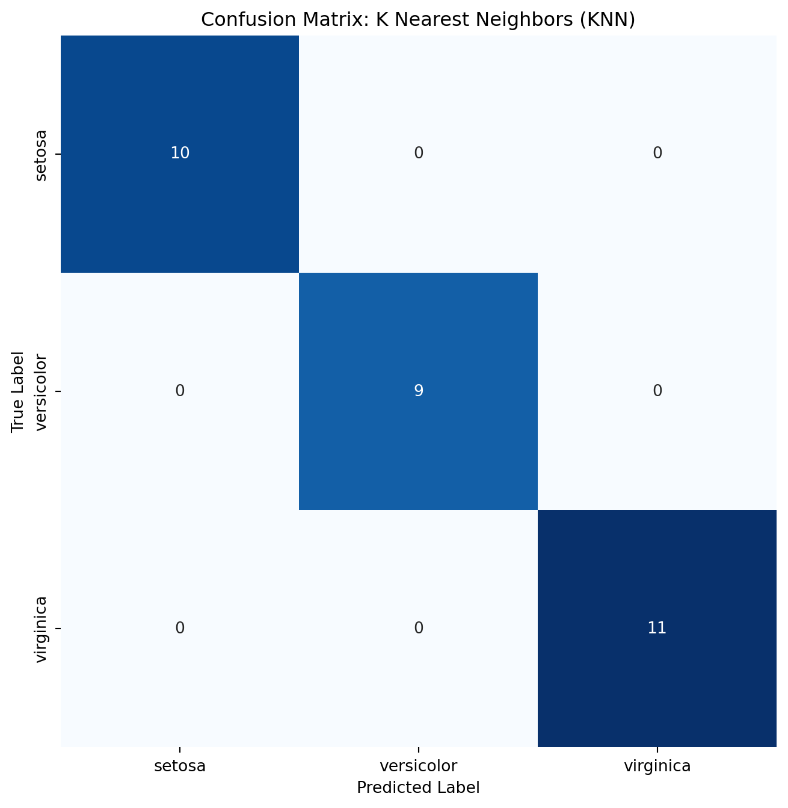

Classification models play a pivotal role in assigning labels to data points, facilitating decision-making in various domains. As we delve into the nuances of classification, this blog post will explain essential metrics—Receiver Operating Characteristic (ROC) curves, Precision-Recall (PR) curves, and Confusion Matrix. Together, they offer profound insights into the performance of classification models, guiding us through the complex terrain of true positives, false positives, precision, recall, and the elusive trade-offs between them.
Understanding Relevant Classification Metrics
Receiver Operating Characteristic (ROC) Curve
The Receiver Operating Characteristic (ROC) curve is a fundamental tool in the evaluation of classification models. It illustrates the performance of a binary classifier by plotting the true positive rate against the false positive rate across various threshold settings. The curve provides valuable insights into the model’s ability to distinguish between classes, specifically showcasing the trade-off between sensitivity and specificity. Understanding the ROC curve involves interpreting the area under the curve (AUC), where a higher AUC signifies superior model performance.
Precision-Recall (PR) Curve
In the landscape of classification evaluation, the Precision-Recall (PR) curve complements the insights gained from the ROC curve. Unlike the ROC curve that focuses on true positive rates and false positive rates, the PR curve emphasizes the trade-off between precision and recall. Precision, a measure of the accuracy of positive predictions, and recall, a measure of the model’s ability to capture all positive instances, take center stage in the PR curve analysis. The PR curve serves as a valuable tool, especially in scenarios where imbalanced class distribution demands a closer examination of positive class prediction accuracy.
Confusion Matrix
The Confusion Matrix stands as a cornerstone in the assessment of classification model performance. Comprising four key metrics—true positives, true negatives, false positives, and false negatives—the matrix provides a comprehensive view of the model’s predictive capabilities. Each cell in the matrix represents a different aspect of the model’s predictions, allowing us to quantify accuracy, precision, recall, and the F1 score.
As we delve into the Confusion Matrix section, we will explore how to interpret these metrics and understand the implications for decision-making. The Confusion Matrix is an invaluable tool for gaining a nuanced understanding of a model’s strengths and weaknesses, guiding us in refining our approach to classification challenges.
Applying Classification: K Nearest Neighbors (KNN)
To put these classification metrics into action, let’s explore the application of the K Nearest Neighbors (KNN) algorithm—a versatile and intuitive classifier. KNN is a type of instance-based learning where a data point is classified by the majority class of its k nearest neighbors.
Dataset: Iris Flowers
We’ll employ the classic Iris dataset, a well-known benchmark for classification tasks. This dataset comprises measurements of sepal length, sepal width, petal length, and petal width for three species of iris flowers—setosa, versicolor, and virginica.
KNN Implementation
Let’s implement the KNN classifier using the scikit-learn library and showcase the classification results with a visual representation.
Code
from sklearn.metrics import confusion_matrixfrom sklearn.neighbors import KNeighborsClassifierimport seaborn as snsimport matplotlib.pyplot as pltfrom sklearn.datasets import load_irisfrom sklearn.model_selection import train_test_split# Load the Iris dataset (replace this with your own data loading)iris = load_iris()X = iris.datay = iris.target# Split the data into training and testing setsX_train, X_test, y_train, y_test = train_test_split(X, y, test_size=0.2, random_state=42)# Create and train the KNN classifierknn_classifier = KNeighborsClassifier(n_neighbors=3) # You can adjust the number of neighbors as neededknn_classifier.fit(X_train, y_train)# Get predictionsy_pred = knn_classifier.predict(X_test)# Calculate confusion matrixcm = confusion_matrix(y_test, y_pred)# Plot the confusion matrix using seabornplt.figure(figsize=(8, 8))sns.heatmap(cm, annot=True, fmt='d', cmap='Blues', cbar=False, xticklabels=iris.target_names, yticklabels=iris.target_names)plt.title('Confusion Matrix: K Nearest Neighbors (KNN)')plt.xlabel('Predicted Label')plt.ylabel('True Label')plt.show()

The confusion matrix serves as a visual representation of the performance of our K Nearest Neighbors (KNN) classifier on the Iris dataset. Each row of the matrix corresponds to the actual class, while each column represents the predicted class. The diagonal elements of the matrix indicate the number of correctly classified instances for each class. This insightful tool allows us to analyze where our classifier excels and where it may encounter challenges. By breaking down predictions into true positives, true negatives, false positives, and false negatives, we gain a nuanced understanding of the classifier’s strengths and areas for improvement. This analysis forms the foundation for interpreting more advanced metrics like precision, recall, ROC curves, and PR curves, providing a comprehensive evaluation of our classification model.
As demonstrated through our exploration of the KNN algorithm on the Iris dataset, classification techniques provide a robust framework for decision-making in diverse domains. Whether discerning between species of flowers or making critical decisions in complex scenarios, the power of classification lies in its ability to distill patterns from data, guiding us toward informed choices. KNN is a very basic and introductory technique in classification. As we continue to refine and advance classification techniques, the role they play remain at the foundation of classification.